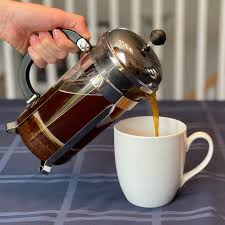

French Press Coffee - Recipe

Description
The French press brews excellent coffee with bold and rich flavor. It’s a simple process, but requires the right French press coffee ratio,
grind size, and brew time for the best taste.
Ingredients
Steps
- Grind coffee beans to coarse
- Water ratio should be 17:1
- Heat water till 85 degrees celsius
- Pour water into the french press and let it rest 3:30 mins
- Press it